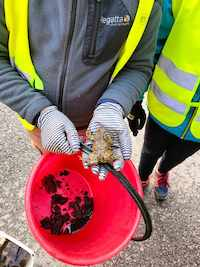

Zbieranie Żab
Przez ostatni czas harcerze z naszej drużyny ratują żaby!
Żaby, jak każdy wie lubią wodę, mają one bardzo wyczulony instyknt, który je kieruję w jej stronę. Jednak czasami aby dojść do celu muszą przejść przez ulicę, są wtedy narażone na jadące po ulicy samochody, dlatego zaraz przy ulicach postawione zostały małe siateczki, które blokują płazom wejście na drogę. Jednak, aby nie zatrzymywać żab od dojścia do rzeczek, należy je przenośić. I wtedy do akcji wchodzą mieszkańcy naszej gminy! Codziennie, rano i wieczorem zjeżdżają się w dolinach, zbierają żaby do wiader i przenoszą je do wody po drugiej stronie ulicy.
W tym także pomagają nasi harcerze! Mamy w tym wiele frajdy i zabawy, a jednocześnie ratujemy planetę!